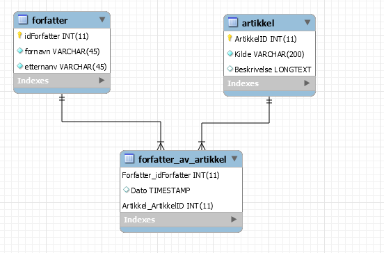

Her er et eksempel på et er diagram
Når databasen er ferdig vil du enkelt kunne vite hvilken "Forfatter" som eier "Artikkelen" Og det er viktig å huske at alt sammen er case sensetive, altså husk store og små bokstaver
Det kan være lurt å ha php koden i et eget dokument for å så "'include="Eksempel.php'". Hvis du ikke deler vil ingenting funke når det er en feil.
Vis du vil hente ut dataen kan du skrive "SELECT K.idForfatter, K.fornavn, K.etternanv, B.Kilde, B.ArtikkelID,
B.Beskrivelse, P.Dato
FROM mydb.forfatter K, mydb.artikkel B, mydb.forfatter_av_artikkel P
WHERE K.idForfatter=P.Forfatter_idForfatter
AND B.ArtikkelID=P.Artikkel_ArtikkelID
ORDER BY B.Beskrivelse, B.ArtikkelID, K.Etternanv, P.Dato"
Koden over henter ut alle dataene hver for seg fra de forkjellige tablene. Så ser den hvor forfatteren passer med Forfatter_idForfatter og artikkelen passer med artikkelen.